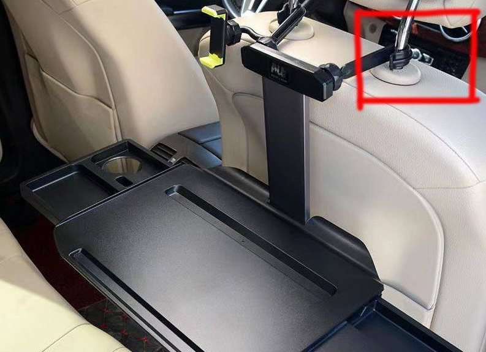

عمل في سيارة كهربائية | أصلي، ترجم بواسطة AI
العمل في سيارة كهربائية
أحدثًا، حاولت العمل في سيارتي الكهربائية مرة أخرى. كنت قد استخدمتُ منضدة محمولة في السيارة من قبل، لكن كانت لا تزال غير مريحة. كنت بحاجة إلى استخدامها في المقعد الخلفي بدلاً من المقعد الرئيسي.
أحدثًا، اشتريت نوعًا آخر من المناضد المحمولة القابلة للطي الكبيرة. كانت أكبر حجمًا ومصممة أصلًا لسيارات تيسلا، مما جعلها مثالية لسيارات تيسلا. ومع ذلك، بالنسبة لسيارات كهربائية أخرى، هناك طرق لتثبيتها، مثل استخدام حزمة من الورق لتعبئة الفراغ ودعم جانب واحد من المنضدة.
في الاستخدام الفعلي، وجدت أن في المقدمة، كانت ركبتي تدعمها بدلاً من حزمة الورق التي تخيلتها. بالإضافة إلى ذلك، تناسب هاتفي المحمول بشكل مثالي على المنضدة. هناك فتحة محددة لحمل الهاتف المحمول دون السماح له بالزلق.
هاتفي المحمول هو آيفون 14 برو ماكس، بحجم شاشة يبلغ 6.7 بوصة. فتحة الهاتف المحمول هي بالضبط الحجم المناسب.
بالنسبة إلى المصباح الكهربائي، قد قمت بمشاركة التفاصيل في مقال آخر [مصباح السيارة - إنجليزي].
اشتريت سيارتي الكهربائية حوالي سبتمبر 2022، ووصلت مسافتها إلى حوالي 56,000 كيلومتر حتى يوليو 2025. لقد استخدمتها بشكل مكثف.
لقد أدركت أن في الحياة هناك العديد من المنتجات التي لا نستغل كامل إمكانياتها أو وظيفتها. لديهم الكثير من الاحتمالات. نحن بحاجة إلى تعلم كيفية استخدامها بحكمة واستخلاص أكبر فائدة منها. الأمر ليس عن المال؛ فقد أنفقنا بعضه بالفعل للحصول عليها. أهم شيء هو التعلم والتفكير.
عندما اخترت عنوان هذا المقال، فكرت في ما إذا كنت يجب أن أدرج “EV” فيه. نعم، يجب أن أفعل ذلك. في سيارة تعمل بالبنزين، من الصعب العمل داخلها بسبب ضجيج المحرك الصاخب وتكاليف الوقود. ومع ذلك، فإن سيارة كهربائية مثالية للعمل داخلها.
شيء آخر يجب التفكير فيه هو إلى أين يجب أن أذهب. ما هي المناظر الجميلة التي أريد مشاهدتها من سيارتي؟ ما هي الأماكن الجيدة التي أريد الذهاب إليها؟ نحن ما زلنا ضعفاء في هذا. التعمير حدث فقط في العقود الأخيرة في الصين. الناس يذهبون إلى مواقع السياحة أو المراكز التجارية في نهاية الأسبوع. بشكل أساسي، في الأرض، هناك جبال وأنهار. هناك مقولة صينية تقول: “السفر بين الجبال والعبور على الماء”.
لدي كاميرا طيران من شركة DJI، DJI Mini 2. أحد طرق العثور على مكان هو عبر مجتمع DJI. هناك مواضع تصوير DJI موصى بها هناك. طريقة أخرى هي استدعاء ذاكرتي، في قوانغتشو، الذهاب إلى تشانغلونغ، بعض الكرنفالات، شارع بكين، شارع أوبسايد وداون، وبرج قوانغتشو، جبل باييون.
أعتقد أن السفر مثل أي شيء آخر، تحتاج إلى القيام بالكثير ثم ستعرف أكثر من الأماكن أو مواقع السياحة التي تريد زيارتها. إنه برنامج أو برمجة. كلما عرفت أكثر، عرفت أكثر مما لا تعرفه.
نهر ليوشي في قوانغتشو جيد. أريد الاقتراب منهم من أماكن مختلفة. إنه مثل المحيط. يمكنك رؤيته في شواطئ مختلفة مع مشاعر مختلفة. أنا أحب المحيط والشاطئ كثيرًا. ربما عندما كنت أكبر، لم أر الكثير. لا زلت أتذكر المرة الأولى التي رأيت فيها الشاطئ، شاطئ دامياشا في شينزين.
لدي كرسيان قابلان للطي في سيارتي. يمكنني استخدامهما ولكن ذلك من أجل الخارج، لا يوجد فيه تكييف هوائي. لذا، ربما في الموسم الذي لا أحتاج فيه إلى تكييف هوائي، ربما أخرج أكثر مثل الشتاء أو أوائل الربيع أو أواخر الخريف.
أنا متأكد أنني أعيش في المستقبل بهذه الطريقة. أعيش في قوانغتشو لمدة حوالي 15 عامًا حتى عام 2025. لكن هناك ما زلنا العديد من الأماكن التي لم أذهب إليها، خاصة تلك المباني المكاتب أو المجتمعات التجارية. بالإضافة إلى منزلي أو مكتب صاحب العمل، لماذا سأذهب إلى مبنى مكتب آخر؟
يمكن فهم ذلك إذا كنت مؤسسًا لمشروع جديد وأذهب إلى مبنى مكتب آخر للقاء الناس لمناقشة الأمور التجارية.
أقل ما أفعل ذلك. أحيانًا فقط أذهب إلى المباني التجارية حيث يعيش أقاربي هناك.
 المصدر: لقطات ذاتية
المصدر: لقطات ذاتية
 المصدر: pinduoduo.com
مصباح كهربائي مريح ومريح يعمل بالUSB للاستخدام في السيارة
استخدام مصباح في سيارتي يجعل الداخلية مضيئة، لذا فإن السطوع داخل وخارج السيارة تقريبًا متساويان. هذا يساعد عيني على الشعور بالارتياح أكثر أثناء القيادة. اخترت مصباحًا يعمل بالUSB دون بطارية. وهذا يعني أن المقبس المتصل بمقبس السجائر في سيارتي الكهربائية يمكن أن يمد المصباح بالتيار الكهربائي. عندما أقفل السيارة، يتوقف المصباح تلقائيًا عن العمل.
سابقًا، كنت أستخدم مصباحًا يحتوي على بطارية. لأن هذا النوع من المصابيح غالبًا ما يستخدم في المنزل للدراسة، إلخ، فإن وجود بطارية يجعلها سهلة الحركة دون الحاجة إلى توصيلها بمقبس. لذا، مع مصباح يحتوي على بطارية، كنت بحاجة إلى لمس قاعدة المصباح لإطفائه.
الآن، أستخدم مصباحًا يعمل بالUSB دون بطارية، لذا لا أحتاج إلى إطفائه يدويًا عندما أغادر وأقفل السيارة.
في الصورة، يمكنك ملاحظة المفتاح الذكي في المقبس. وضعته هناك دون معرفة كيفية استخدامه. رأيت هذا في منزلي وفكرت أن يمكنني استخدامه في السيارة يومًا ما. في المنزل، أستخدم المفتاح الذكي للتحكم في آلة تصفية المياه، والتي يمكن أن تكون مزعجة عندما تصدر صوتًا أثناء نومي.
 المصدر: لقطات ذاتية
المصدر: لقطات ذاتية